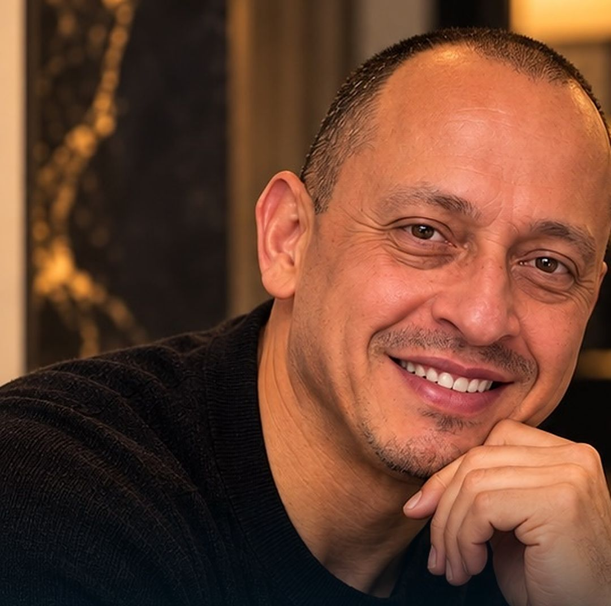
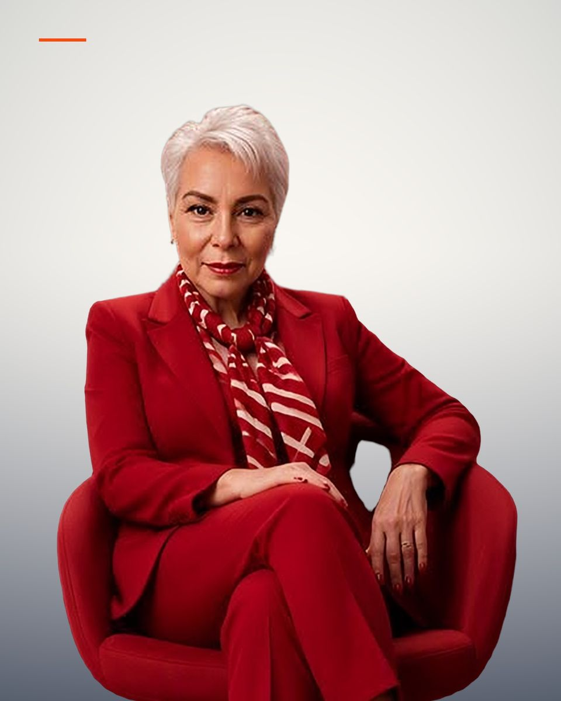
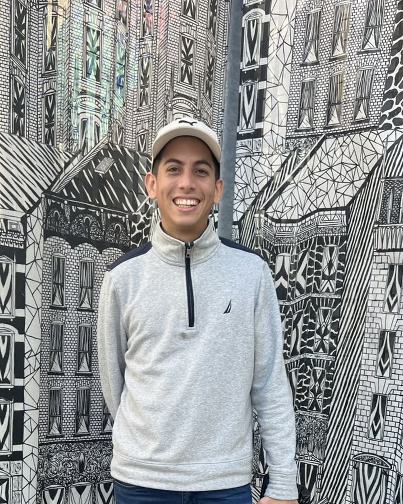

Housing insecurity
People experiencing homelessness and housing insecurity.
Boston 501(c)(3)
Status Project Inc. connects people and families in Boston with housing, health, recovery, community support, and opportunity — in their own language, and with respect for their culture.
People | Pathways | Possibilities

Our mission
To improve access to housing stability, behavioral health and substance-use recovery resources, community support, health and social-service navigation, and opportunities for lasting stability and dignity.
Who we serve
We support marginalized and underserved individuals and communities through inclusive, culturally responsive services and partnerships.
People experiencing homelessness and housing insecurity.
LGBTQ+ communities are among the people Status Project serves.
Immigrants who need a first step in their own language, including translation and help finding a path through asylum and work-permit applications.
Neighbors facing barriers to care, resources, and social inclusion.
How we help
Contact Status Project to confirm what support is available. We connect people with resources. We do not provide clinical diagnosis, treatment, or medical services.
Help toward rental support and housing stability.
Help finding a path through the application process.
A first step in a person’s own language.
Accompaniment to hospital visits.
Navigation toward the resources a person or family needs.
2026 Board
Meet the 2026 Board of Directors. People committed to this work, supported by volunteers and community partners.
Co-founder
Founder, President & Executive Director
Read profile
Co-founder
Vice President & Vice Chair
Read profile
Co-founder
Treasurer
Read profile2026 Board
Clerk (Corporate Secretary)
Portrait forthcoming
Read profile
2026 Board
Director of Community Affairs & External Relations
Read profileBoston Community Impact Fund
The fund is open. It strengthens pathways to housing stability, essential resources, and community support for individuals and families across Greater Boston.
Stories
Mission, values, and the fund — written from Status Project’s public voice. Verified program outcomes will be shared as they become available.